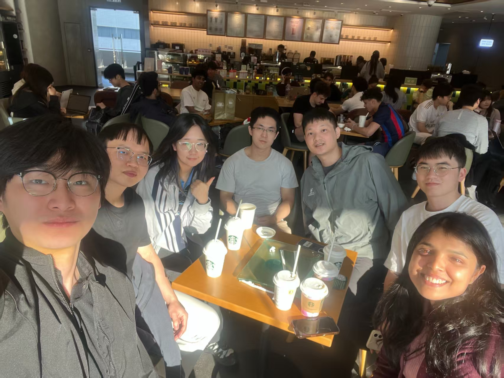
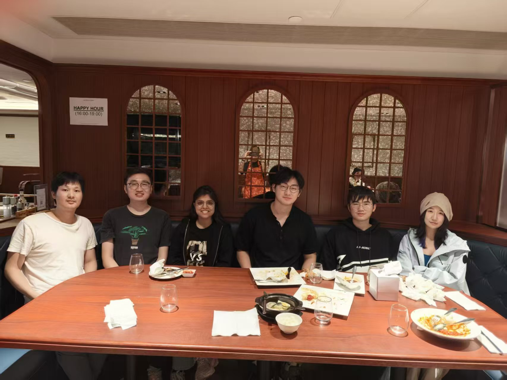
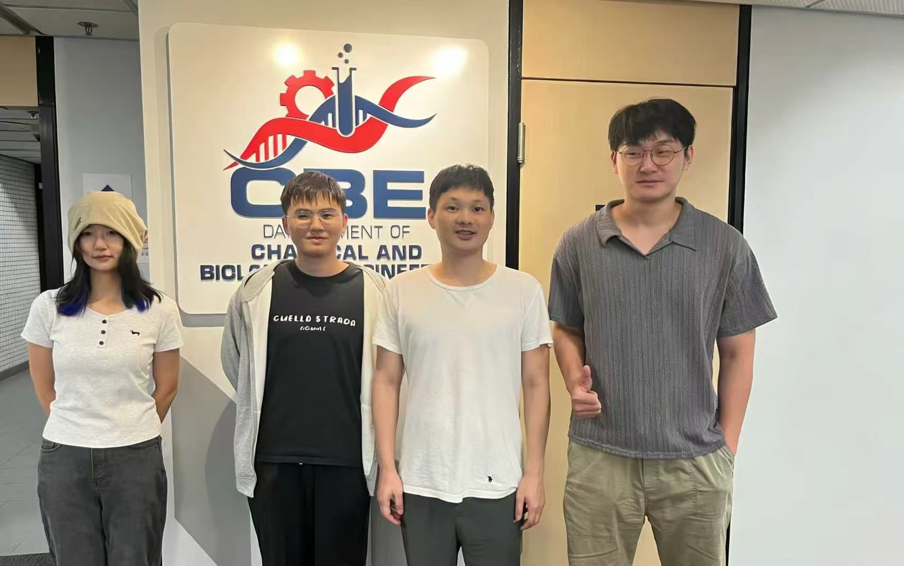
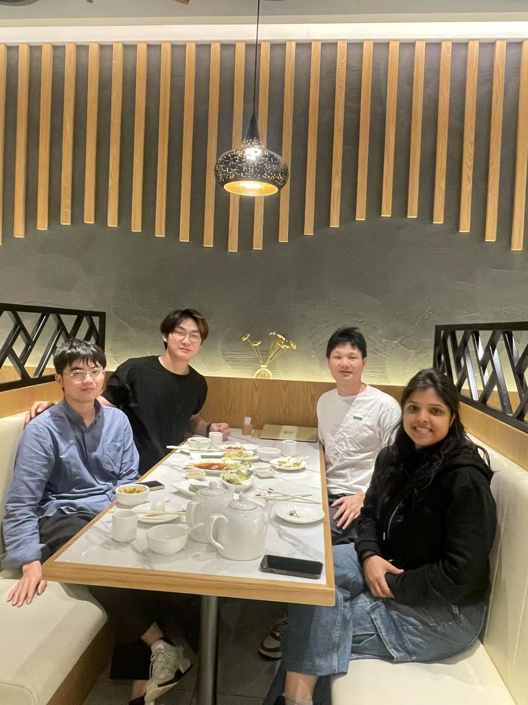
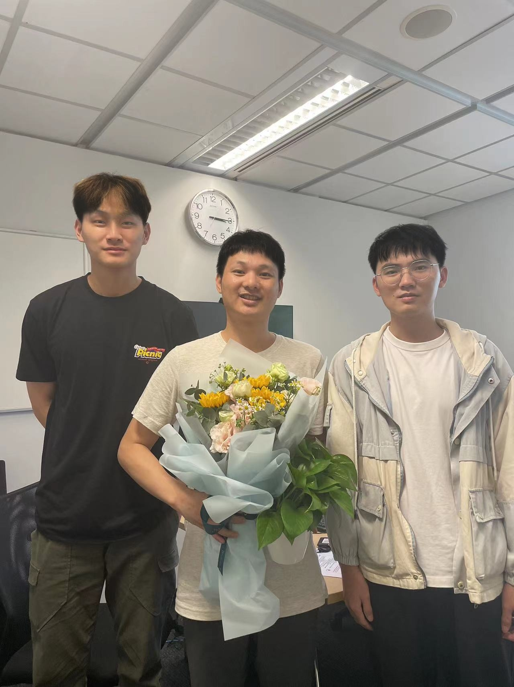

Communications Chemistry
Sequence and length-scale dependent dynamics in biocondensates of highly charged disordered proteins
Biocondensates
Protein Dynamics
Coacervation
Peer-reviewed research from Chen Lab
163, 171101-1
16 (1), 62891
20 (15), 6870-6880
131, 218201
127, 6825-6832
arXiv:2302.01080
119 (36), e2209975119
55, 3898-3909
618, 283-289
For publications from 2018-2021, please visit Dr. Shensheng Chen's Google Scholar profile.
Lab Life
Moments from our lab gatherings, celebrations, and team activities.






